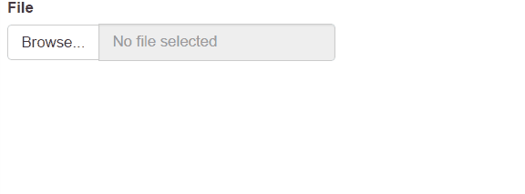

The shinyjqui package is an R wrapper for jQuery UI javascript library. It allows user to easily add interactions and animation effects to a shiny app.
Installation
You can install the stable version from CRAN, or the development version from github with:
# install from CRAN
install.packages('shinyjqui')
# for the development version
devtools::install_github("yang-tang/shinyjqui")Usage
# load packages
library(shiny)
library(shinyjqui)
library(ggplot2)
library(highcharter)- Draggable: Allow elements to be moved using the mouse
server <- function(input, output) {}
ui <- fluidPage(
jqui_draggabled(fileInput('file', 'File'))
)
shinyApp(ui, server)
- Resizable: Change the size of an element using the mouse.
server <- function(input, output) {
output$gg <- renderPlot({
ggplot(mtcars, aes(x = cyl, y = mpg)) + geom_point()
})
}
ui <- fluidPage(
jqui_resizabled(plotOutput('gg', width = '200px', height = '200px'))
)
shinyApp(ui, server)
- Sortable: Reorder elements in a list or grid using the mouse.
server <- function(input, output) {
output$hc <- renderHighchart({
hchart(mtcars, "scatter", hcaes(x = cyl, y = mpg, group = factor(vs))) %>%
hc_legend(enabled = FALSE)
})
output$gg <- renderPlot({
ggplot(mtcars, aes(x = cyl, y = mpg, color = factor(vs))) +
geom_point() +
theme(legend.position= "none")
})
}
ui <- fluidPage(
jqui_sortabled(div(id = 'plots',
highchartOutput('hc', width = '200px', height = '200px'),
plotOutput('gg', width = '200px', height = '200px')))
)
shinyApp(ui, server)
- Animation Effects: Apply an animation effect to an element. Effects can also be used in hide or show.
server <- function(input, output) {
observeEvent(input$show, {
jqui_show('#gg', effect = input$effect)
})
observeEvent(input$hide, {
jqui_hide('#gg', effect = input$effect)
})
output$gg <- renderPlot({
ggplot(mtcars, aes(x = cyl, y = mpg, color = factor(gear))) +
geom_point() +
theme(plot.background = element_rect(fill = "transparent",colour = NA))
}, bg = "transparent")
}
ui <- fluidPage(
div(style = 'width: 400px; height: 400px',
plotOutput('gg', width = '100%', height = '100%')),
selectInput('effect', NULL, choices = get_jqui_effects()),
actionButton('show', 'Show'),
actionButton('hide', 'Hide')
)
shinyApp(ui, server)
- Classes transformation: Add and remove class(es) to elements while animating all style changes.
server <- function(input, output) {
current_class <- c()
observe({
input$class
class_to_remove <- setdiff(current_class, input$class)
class_to_add <- setdiff(input$class, current_class)
current_class <<- input$class
if(length(class_to_remove) > 0) {
jqui_remove_class('#foo', paste(class_to_remove, collapse = ' '), duration = 1000)}
if(length(class_to_add) > 0) {
jqui_add_class('#foo', paste(class_to_add, collapse = ' '), duration = 1000)}
})
}
ui <- fluidPage(
tags$head(
tags$style(
HTML('.class1 { width: 410px; height: 100px; }
.class2 { text-indent: 40px; letter-spacing: .2em; }
.class3 { padding: 30px; margin: 10px; }
.class4 { font-size: 1.1em; }')
)
),
div(id = 'foo', 'Etiam libero neque, luctus a, eleifend nec, semper at, lorem. Sed pede.'),
hr(),
checkboxGroupInput('class', 'Class',
choices = list(`width: 410px; height: 100px;` = 'class1',
`text-indent: 40px; letter-spacing: .2em;` = 'class2',
`padding: 30px; margin: 10px;` = 'class3',
`font-size: 1.1em;` = 'class4'))
)
shinyApp(ui, server)
- orderInput(): Display a list of items. Their order can be changed by drag and drop.
server <- function(input, output) {
output$order <- renderPrint({ print(input$dest_order) })
}
ui <- fluidPage(
orderInput('source', 'Source', items = month.abb,
as_source = TRUE, connect = 'dest'),
orderInput('dest', 'Dest', items = NULL, placeholder = 'Drag items here...'),
verbatimTextOutput('order')
)
shinyApp(ui, server)
- sortableTableOutput(): Render a HTML table with sortable rows.
ui <- fluidPage(
verbatimTextOutput("order"),
sortableTableOutput("tbl")
)
server <- function(input, output) {
output$order <- renderPrint({
cat("Rows order:\n")
input$tbl_order
})
output$tbl <- renderTable(head(mtcars), rownames = TRUE)
}
shinyApp(ui, server)
- selectableTableOutput(): Render a HTML table with selectable rows or cells.
ui <- fluidPage(
selectableTableOutput("tbl", selection_mode = "cell"),
verbatimTextOutput("selected")
)
server <- function(input, output) {
output$selected <- renderPrint({
cat("Selected:\n")
input$tbl_selected
})
output$tbl <- renderTable(head(mtcars), rownames = TRUE)
}
shinyApp(ui, server)
Links
- Download from CRAN at
https://‚Äãcran.r-project.org/‚Äãpackage=shinyjqui - Browse source code at
https://‚Äãgithub.com/‚Äãyang-tang/‚Äãshinyjqui - Report a bug at
https://‚Äãgithub.com/‚Äãyang-tang/‚Äãshinyjqui/‚Äãissues
License
Developers
- Yang Tang
Author, maintainer